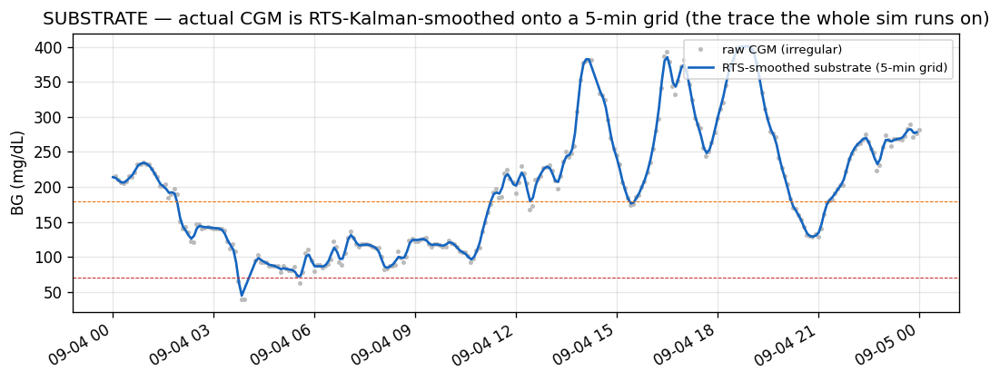
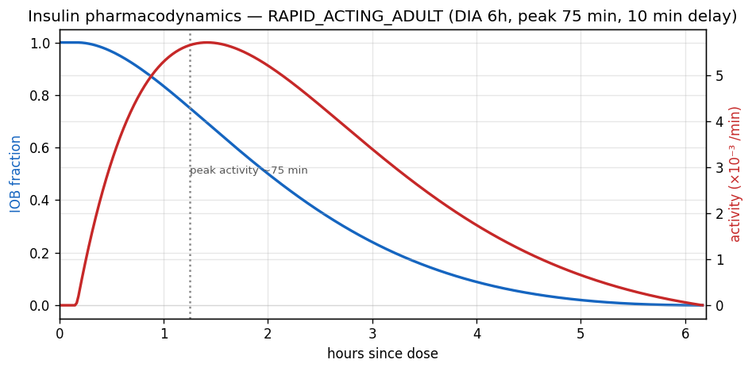
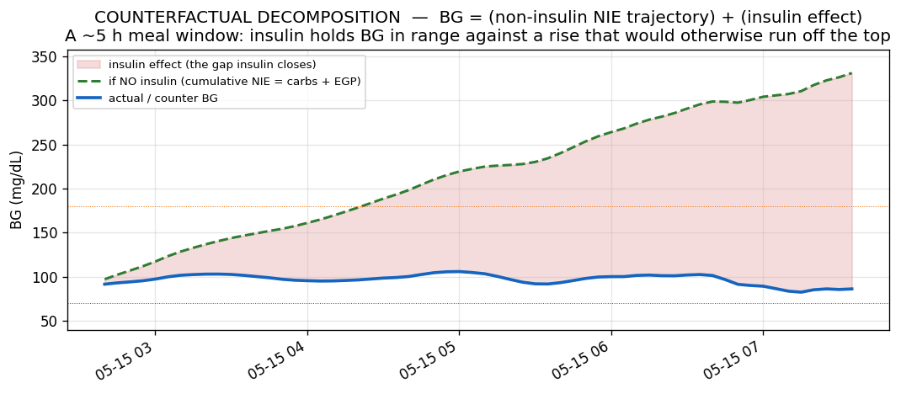
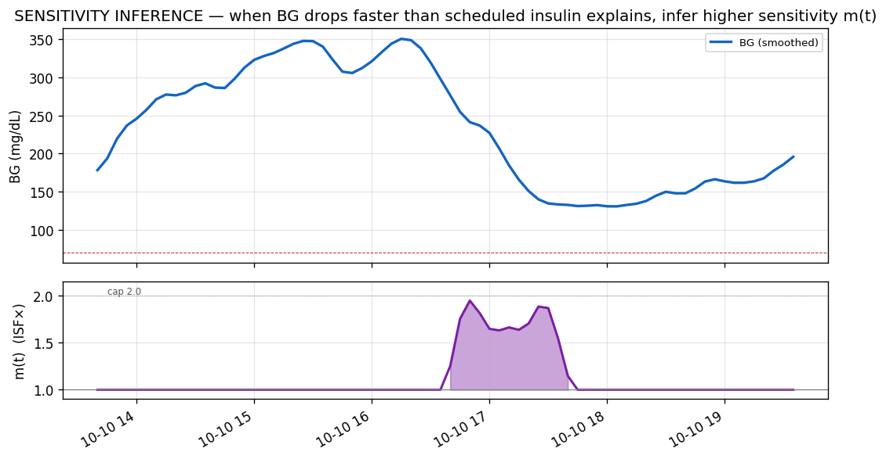
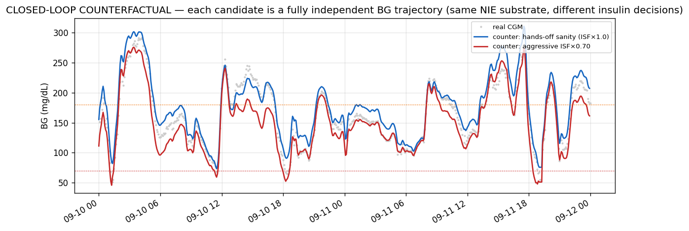
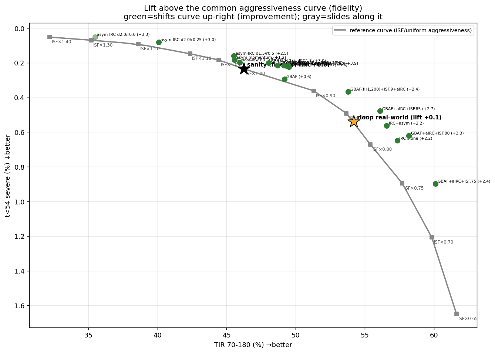

A technical primer on how the simulator works — data, the counterfactual physiology, the closed loop, the sensitivity-fidelity model, disruption handling, and how candidate algorithm changes (Loop and OpenAPS) are scored. Living document — kept current as the evaluator evolves.
Last reviewed 2026-06-07.
LoopEval estimates the likely therapy impact of a change to the Loop closed-loop insulin algorithm (or its settings) before the change is ever tried on a person, by replaying it against a real person's historical CGM + insulin data. It is safety-critical software: insulin dosing errors cause hypoglycemia, which can be immediately dangerous. The guiding optimization target is to increase Time-in-Range (70–180 mg/dL) while keeping severe-low (<54) time as low as possible — ideally both improve. This is a heavily-weighted trade-off, not a hard gate: reducing lows is the priority and a rise in <54 is a serious cost, but a small increase can be worth a large TIR gain. Both sides are always reported.
The tool has three conceptually distinct modes. This guide is about simulate — the closed-loop counterfactual — which is the primary tool for therapy-outcome questions.
| Mode | What it does | Answers |
|---|---|---|
evaluate / inspect | Forecast replay: reconstructs Loop's predictions at historical timestamps, compares forecast curves to actual CGM. | Is the forecast biased? Where does the model diverge? |
bench | A/B per-step dose-delta on the same observed trace. Fast; linearized counterfactual. | Quick diagnostic of dose deltas. (Its TIR is not clinical evidence.) |
simulate | Closed-loop counterfactual replay — runs a candidate algorithm forward as an independent BG trajectory. | How would TIR / lows actually change? |
DosingEngine abstraction). Besides Loop, the simulator can drive OpenAPS / oref (the algorithm behind Trio, via the standalone OpenAPSSwift package) as the candidate — so a whole different algorithm can be compared against Loop on the same person's real data and the same NIE substrate. Both engines go through the identical substrate, scoring, and disruption handling, so the comparison is apples-to-apples. See §12.The pipeline turns a Nightscout URL + a date range + a candidate config into a counterfactual BG trajectory and outcome stats. Everything downstream of the substrate is deterministic.
The conceptual heart: the simulator does not try to model glucose physiology from first principles. Instead it extracts the person's real non-insulin glucose dynamics from history (the ICE, below) and replays them, substituting only the candidate's insulin decisions. "The user's real-day physiology, with different insulin."
Data is pulled from the Nightscout v1 API (NightscoutClient) and cached on disk under ~/.loop-eval/cache/, keyed by host + epoch range (e.g. glucose_<host>_<start>_<end>.json). Four streams are fetched: glucose (CGM entries), doses (treatments → boluses + temp basals), carbs (carb entries, with each entry's real absorptionTime), and therapy (the time-of-day schedules: ISF, basal, carb ratio, targets, insulin type).
fetchEntries requests in 28-day chunks and concatenates (transparent to the cache, which still stores one file for the requested interval).The therapy schedule is expanded across the whole window (the "current-profile backfill"). This is fine for "replay these proposed settings" but is not proof of the historically-active settings.
The raw CGM is resampled onto a uniform 5-minute grid and passed through an RTS Kalman smoother (buildSmoothedGrid, gated on kalmanSmoothing, default ON; --no-kalman = raw). This smoothed trace is the single substrate for everything: the ICE, the counterfactual, what Loop's forecast "sees", and the outcome stats.

--sensor-cap-mgdl, default 400). The glucose the algorithm sees is clipped at the sensor's reporting ceiling — real Dexcom G6/G7 and Libre peg at ~400 mg/dL, so no controller ever sees a higher value. The cap is applied to both the baseline and candidate inputs; the counter trajectory and scoring still use the uncapped values. Without it, a counterfactual that runs very high (e.g. an algorithm that wedges after a pump outage) could feed an unrealistically high reading into the controller and distort its response. Common-mode, so deltas are unaffected.Insulin action uses Loop's exponential insulin model. The default is RAPID_ACTING_ADULT: 6 h duration of action (DIA), peak activity ~75 min, 10 min delay. The activity curve (rate of glucose-lowering) and the IOB curve (insulin remaining) are derived from it.

Insulin glucose-effects are computed via glucoseEffects over the dose history and the ISF schedule. A key subtlety is how basal is accounted: Loop uses net-basal units (volume − scheduledBasal×duration). Delivering more than scheduled basal is BG-lowering; delivering less (suspending) is modelled as an EGP credit — a positive (BG-raising) contribution representing endogenous glucose production no longer covered by basal. (This net-basal convention has important consequences for the fidelity model — see §10.)
The core idea (CF mode, --candidate-counterfactual). At each step the simulator advances a counterfactual BG, counter_BG, by adding two things: the glucose effect of the candidate's insulin, and the person's observed non-insulin glucose dynamics (the ICE).
The ICE is pre-computed once from the real day: it's the observed BG velocity minus the modelled effect of the real insulin.
So the ICE captures everything that moved BG that wasn't the modelled insulin: carb absorption, endogenous glucose production, exercise, dawn phenomenon, sensor surprise. It is the person's "real-day physiology" distilled into a per-step velocity, and it is dose-independent — it does not change when we change the candidate's dosing.
Because the ICE is reused verbatim while the insulin term is recomputed from the candidate's doses, the counterfactual is bounded and IOB-consistent: it can't drift to absurd values, and it answers exactly "what if Loop had dosed differently, on this person's real day?"

counter = actual − Σ(Δdose × ISF × PD). It is accurate only for small per-step deltas (rules firing ±0.05–0.10 U); for whole-algorithm comparisons use CF mode.The candidate side is a sequential per-step walk (5-min steps). Critically, the candidate runs its own Loop: at each step it forecasts from its accumulated decisions and chooses a dose, which feeds the next step. Both baseline and candidate go through one canonical dose path (simStepDose → LoopAlgorithm.generatePrediction) so that identical configs give Δdose ≈ 0 (see §17).
Loop's prediction sees only what was available at t: glucose and doses up to t, plus carbs whose entryDate (DB insert time, not the back-dated meal time) is ≤ t. It does not see future insulin or future carb entries unless --oracle-future-inputs is set (debug only). The one deliberate exception is the substrate's RTS smoothing (§4).
The first 6 h is a burn-in: real-pump deliveries drive the sim so the candidate's first real decision has a fully realistic recent dose history (correct initial IOB). Counterfactual divergence begins after burn-in.
As counter_BG falls below an onset threshold, the body defends with surging hepatic glucose output (glucagon/epinephrine). The sim models this as a positive BG velocity that ramps with depth below onset, capped:
Standard config: --counter-reg-onset 54 --counter-reg-gain 0.4 --counter-reg-max 8.0. The real ICE already carries counter-regulation at the real BG level; this term adds the extra defense that the counter's lower-than-real level would trigger, so it fires almost only where the counter has diverged below the real range. Before the floor was added, counterfactual lows could run away to physically-impossible values (e.g. −100 mg/dL), which made severe-low stats meaningless; the floor makes the counter physical and the t<54 metric trustworthy.
The plain counterfactual has a subtle bias. The ICE is a residual computed at the scheduled ISF. If the person was actually more sensitive than scheduled at some moment, the modelled insulin under-counted the true drop, and that leftover insulin-driven drop gets dumped into the ICE as if it were dose-independent physiology. When a candidate then changes the dose, this matters: the candidate's dose delta is applied at the scheduled ISF, not the person's true local sensitivity.
Fidelity mode (--candidate-infer-sensitivity) corrects this. Per step, over a trailing ~30 min window, it measures how much BG actually moved versus how much the scheduled-ISF insulin explains. If BG is still dropping after subtracting modelled insulin, the insulin must have been more effective — so it scales ISF up by a multiplier m(t) just enough to absorb that negative residual (never past it, so it never manufactures a rise):

m(t) rises above 1 (purple), capped at 2.0. The cap is the "can't subtract more insulin than is physically present" ceiling — when little insulin is active the unexplained drop stays in the additive ICE (the exercise / low-IOB case).Why m only goes up (≥1): a downward residual is, physiologically, almost always insulin (the only thing that actively removes glucose; EGP can only stop raising it, carbs are positive). Validated against the real field on the period the device ran IRC: the fidelity sim reproduces the actual low time, while the plain (m≡1) sim under-counts it by ~40%.
m (cap 2.0, 30-min trailing window — no smoothing). A cross-user field check confirmed it: replaying with the real user boluses passed through (so sim dosing tracks the field), the simulator's time-low lands almost exactly on the real record on the cleanest dataset (a heavy meal-announcer, where sim and field dosing match within ~8 mg/dL mean). The residual severe-low gap on a sparser-announcing user traced to dosing character (the field's deep crashes are discrete meal-bolus spikes the automated sim doesn't reproduce), not to under-attributed sensitivity — confirmed by closing the mean-BG offset and re-checking.m(t) solved per-step is spiky (sensitivity is really a slow latent state), so two optional smoothers are available: --candidate-infer-sensitivity-smooth-min (carry-latent Gaussian) and --candidate-infer-sensitivity-smooth-prior (shrinkage toward 1). They are identity-safe (they only scale a term that is zero when candidate doses ≡ real). But the same cross-user check found smoothing over-attributes — it overshoots the real low time on the clean dataset — so the validated default remains raw per-step m. The smoothers stay available for research, off by default.Two correctness requirements when scaling sensitivity:
Under net-basal accounting, a sub-basal (suspended) delivery shows up as a positive EGP-credit term. Naively scaling the whole net effect by m>1 would magnify that positive term and push the forecast up — nonsensical. So the fidelity physiology is computed over physical delivery (the always-lowering effect of the absolute insulin volume) with the EGP held separate at the scheduled ISF (.physicalDelivery decomposition). m scales only the physical-insulin term; EGP rides, unscaled, in the dose-independent residual.
Loop's controller decides doses on what it believes (the scheduled ISF, or a candidate ISF). The physiology responds at the true sensitivity (scheduled × m(t)). The fidelity model keeps these two paths separate, so changing the controller's ISF belief doesn't silently change the body's response.
candPhys and realPhys are the physical active-insulin effects (EGP zeroed) of the candidate's doses and the real doses. When the candidate's doses equal the real doses, candPhys = realPhys, so the entire m term is exactly zero for any m and the counter reproduces the substrate. That's the guarantee that lets the sensitivity knobs (cap, window, and the off-by-default smoothers) change the patient model without ever perturbing a no-op candidate — and, with the single shared dose path (§7), why identical baseline/candidate configs give Δdose ≈ 0 and counter ≡ sanity (§17). (Note: this physical/EGP-separated form is distinct from the plain CF advance in §6, which uses net-basal insulin + additive ICE; the fidelity path is not a drop-in m=1 reduction of it.)Two structurally different real-world events get explicit handling, both in the SIM and in scoring.
| Pump outage (pod off) | CGM gap | |
|---|---|---|
| Detected from | Site-change events + dose-record-gap heuristic → --outages-csv | ≥2 missing 5-min samples (omitted from the grid); --cgm-stale-guard-min |
| In the sim, DURING | delivery clamped to 0 (no insulin while the pump is physically off) | no new dose adjustment (Loop won't dose on stale data); scheduled basal continues |
| When it ends | resumes its own closed-loop dosing immediately | resumes the moment CGM returns |
| In scoring | only the disruption interval itself is excluded — not the recovery window (policy 2026-05-26) | |
post_hours now defaults to 0.A "candidate" is an EvalConfig + CLI flags expressing one change. The key levers:
| Lever | Flag | What it changes |
|---|---|---|
| ISF multiplier | --candidate-sensitivity-multiplier | Flat scale on the controller's ISF (<1 = more aggressive / dose more). |
| Application factor | --candidate-application-factor | Fraction of the computed correction delivered per cycle (Loop default 0.4). |
| GBAF | --candidate-gbaf (+ anchors/factors) | Glucose-based application factor: ramps the app-factor up with BG — aggressive only when high (fidelity-stable on lows). |
| Integral RC | --candidate-integral-rc | Integral retrospective correction (a PID-like term on accumulated forecast error). |
| Asymmetric IRC | --candidate-irc-drop-scale / -rise-scale | Sign-dependent IRC gain — damp the rise response, amplify the drop response (lows-protective). |
| Asymmetric momentum | --candidate-asymmetric-momentum | Turns off positive momentum fast on a downtrend. |
| Post-low protector | --candidate-postlow-suppress / -isf-mult | After a recent low, lower the forecast / raise ISF (slow-off) to damp the rebound re-dose. |
| Sensitivity inference | --candidate-infer-sensitivity | The fidelity physiology model (§9) — also a research substrate, not only a therapy lever. Tuning: -max (cap, default 2.0), -window-min (default 30), and the off-by-default smoothers -smooth-min / -smooth-prior. |
| Predictive sens-damp | --candidate-sens-damp-gain | Causal sustained-ICE trigger → proactive ISF reduction before a low. |
| OpenAPS engine | --candidate-openaps (+ -oaps-*) | Swap the candidate's whole dosing algorithm to oref/OpenAPS instead of Loop. Sub-flags expose oref knobs: -oaps-threshold (SMB safety floor), -oaps-dynamic-isf / -oaps-sigmoid (Dynamic ISF), -oaps-smb-ratio, etc. |
| Sensor cap | --sensor-cap-mgdl | Ceiling on the BG the controller sees (default 400 — real sensor behavior). §4. |

Outcome stats are computed on the counter trajectory after the burn-in and after the disruption-interval exclusion (§11). The headline metrics, in priority order:
kept_frac (fraction of samples surviving exclusion)Canonical scorer: loopeval_analysis.scoring.score_counterfactual(trace, outages_csv, cgm_gaps_csv) (skips burn-in, applies the interval exclusion). Forecast-quality metrics (OPR/UPR) are separate and used by the evaluate mode.
t<54. The RTS smoother removes single-sample noise but not sustained 40-floor plateaus. They're common-mode across candidates (so deltas/rankings hold) but the absolute lows figures should be read with this in mind.A single (TIR, t<54) point is ambiguous, because most single levers (ISF, app-factor) just slide along one common "aggressiveness" curve. The lift framework fits a reference curve from a dense ISF sweep, then scores each candidate by its vertical distance above that curve at matched lows. Lift ≈ 0 = a slider; lift > 0 = a genuine structural improvement (it shifts the curve up-and-right).

Beyond the reactive frontier, a perfect-foresight oracle (offline optimal dosing given the known future ICE) bounds the best case: with perfect carb + sensitivity foresight, ~95% TIR at ~0 severe lows is achievable — and the gap to the best causal algorithm is almost entirely a forecasting problem (carbs/sensitivity ~85 min ahead), not a dosing-logic one. A regret analysis (best-causal vs oracle, on the same substrate) localizes that gap by regime.
.fillna(0) mislabels scheduled basal as suspend; use the effective-delivery helper for TDD/rate.m as the faithful default (§9). Replicated on a second person.| Parameter | Default | Meaning |
|---|---|---|
| eval step | 5 min | Grid + decision cadence |
| burn-in | 6 h | Real-pump warm-up before CF divergence |
| insulin model | RAPID_ACTING_ADULT | DIA 6 h, peak 75 min, 10 min delay |
| kalman smoothing | ON | RTS-smoothed substrate (--no-kalman = raw) |
| counter-reg | onset 54 / gain 0.4 / max 8.0 (std) | Glucose-defense velocity floor |
| sensitivity infer | window 30 min · m_max 2.0 · raw (no smoothing) | Fidelity model (§9), off by default; raw per-step m is the field-validated default |
| sensor cap | 400 mg/dL | Ceiling on BG the controller sees (§4); --sensor-cap-mgdl |
| dosing engine | Loop | Pluggable; --candidate-openaps swaps in oref/OpenAPS (§1, §12) |
| CGM stale guard | 5 min (std) | No new dose when CGM older than this |
| scoring exclusion | post_hours 0 | Disruption interval only, not recovery (§11) |
LoopEval closed-loop simulator — technical guide. Living document, last reviewed 2026-06-07 (RTS substrate, physiological CF, counter-reg floor, EGP-separated sensitivity-inference fidelity with field-validated raw m, pluggable Loop/OpenAPS dosing engines, sensor cap, interval-only disruption exclusion). Graphs generated from real user data; regenerate with make_guide_assets.py. Lives in the LoopEval repo (docs/simulator-guide/) so it versions with the evaluator.